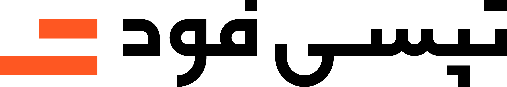

ایستگاه سفر
ایستگاه انتظار مسافر
سایهبان، نیمکت، شارژ موبایل و نمایشگر؛ همراه کد T1 و نشانه محل توقف خودرو.

نمونههای دنیا را ببینید یا مستقیم سراغ طرحهای ما بروید.
پیشنهادهای تصویری پروژه؛ برای دیدن جزئیات روی عکس بزنید.
سایهبان، نیمکت، شارژ موبایل و نمایشگر؛ همراه کد T1 و نشانه محل توقف خودرو.
میز راهنما، تبلت و QR در کنار نمایشگرهای کمپین؛ برای معرفی خدمات و گفتوگو با مراجعهکننده.
تابلوی آویز با فلش، نام ورودی و کد T1؛ راهنمای رسیدن به ایستگاه از داخل مال.
کد درشت T1، آیکون خودرو و فلش روی ستون؛ برای تشخیص نقطه ملاقات در پارکینگ.
این تصاویر تجسم طراحیاند؛ ابعاد، محتوای نمایشگر و جانمایی پیش از اجرا نهایی میشوند.
عکس، یک نکته طراحی و لینک منبع؛ بدون توضیح اضافه.
لوگو روی مشکی و عنوان روی آبی؛ همان سلسلهمراتب در توتم و استند تکرار میشود.
تکرار کد روی ستون و سقف، نقطه ملاقات را از چند فاصله قابل تشخیص میکند.
صورتی در چند ارتفاع تکرار شده تا زون سفر در پارکینگ خاکستری گم نشود.
مبلمان، هم جای انتظار است و هم نشانه سفر؛ یک راهحل سبک بدون اتاق مستقل.
قاب مشخص، نشیمن و پیام ساده استفاده از سرویس، یک نقطه انتظار قابل فهم میسازند.
توتم برای دید دور، گرافیک کف برای محل خودرو و سایهبان برای انتظار مسافر با هم کار میکنند.
حجم ساده و برند خوانا؛ سفارشهای رستورانهای مال به هاب میرسند و به پیک تحویل داده میشوند.
کف، نور و شخصیت برند مخاطب را متوقف میکنند؛ میز راهنما، تجربه را به ارتباط با برند وصل میکند.
ایستگاه فقط سازه نیست؛ تابلو، کد محل، نشانه کف و خدمات باید با هم طراحی شوند.
محل هر نمونه مشخص شده است؛ نمونههای فرودگاهی مرجع سیستم بصریاند. توضیحات، خوانش طراحی از تصاویر هستند.